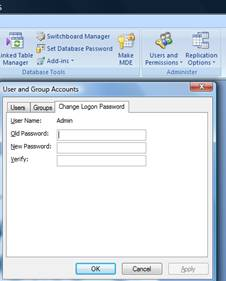
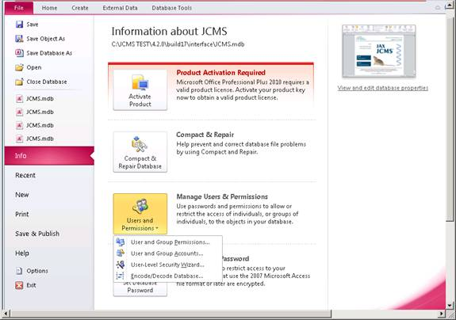
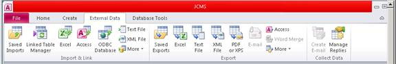

The Jackson Laboratory Colony Management System
This ReadMe file explains the contents of The Jackson Laboratory’s
Colony Management System (JCMS), distribution version 4.8
When you installed JCMS, you specified an installation folder (default is C:\Program Files\The Jackson Laboratory). Within this folder, the folder \JAX-CMS was created. And within this, the folders \database, \interface, \docs, and \ReadMe_files were created (see diagram).
C:\Program Files\The Jackson Laboratory
|
JAX-CMS
|
--------------------------------------
| | |
database interface docs
|
ReadMe_files
First time users
JCMS is a Microsoft Access application. You run JCMS by opening the file JCMS.mdb with MS Access 2007 or 2010 (32-bit version).
You now need to do some administrative functions. When completed, you will be ready to begin entering data. Please refer to the startup guide and the user guide for more information.
Please note that the user guide is found in the <JCMS installation folder> \docs folder. Also, check out http://colonymanagement.jax.org/index.html for all JCMS information.
BEFORE BEGINNING, YOU MUST (1) Add your JCMS directory ('The Jackson Laboratory' folder and subfolders) as a Trusted Location in MS Trust Center, (2) Create a password for user ‘Admin’, (3) Create the user ‘mtsadmin’, and make it a member of the Admin group, (4) Link the tables from the interface database (JCMS.mdb), to the source database (JCMS_db.mdb).
To do this:
Start JCMS by double clicking the JCMS shortcut icon on the desktop, or from the Start menu.
MS
Access2007 instructions: http://colonymanagement.jax.org/access2007instructions.html or see Section
2.3 of the JCMS User Guide.
· Open the JCMS interface by double clicking on the desktop shortcut.
JCMS Welcome Window
· Select the “Database Tools” tab.
· Select “Users and Permissions” from the ribbon.
· Select “User and Group Accounts”.
· Select “Change Logon Password” tab.
· Old password <blank>.
· New password “Admin” (or your choice).
· Verify (repeat your choice).
· Select “OK”.
· Select the “Database Tools” tab.
· Select “Users and Permissions” from the ribbon.
· Select “User and Group Accounts”.
· Select “Users” tab.
· Select “New” button.
· Put “mtsadmin” in the Name field.
· Enter any random value in the Personal ID field.
· Select “OK”.
· Use the “Add>>” button to set user mtsadmin as a member of the Admins and Users groups.
· Close MS Access.
· Restart JCMS and logon as mtsadmin, leave password blank.
· Now give mtsadmin a password using the same procedure as described above to give the Admin user a password. This is not required, but it is very strongly encouraged.
Link the Database Tables
· On the toolbar, select the “External Data” tab.
· Select “Access” in the Import section of the ribbon.
· “Browse” to the JCMS database (JCMS_db.mdb).
· Select “Open”.
· Select “Link to the data source by creating a linked table” radio button (DO NOT IMPORT the tables).
· Select “OK”.
· The “Link Tables” window opens.
· Select “Select all”.
· Select “OK”.
· Close JCMS.mdb and re-open it. The welcome window should appear as shown below with the proper release number. The installation is now ready to be used.
MS Access 2010
special instructions are below.
The steps are the same as indicated above for Access 2007. However, some of the features have been moved.
Users and Permissions
Use the red File tab to find the Users and Permissions tool.

MS Access 2010 Users and Permissions dialog boxes
Linked Table Manager
Use the External Data tab to find the Linked Table Manager.

MS Access 2010 Linked Table Manager
NOTE: In MS Access 2010, certain configuration
changes may require logging on as Admin, for example, if tables need to be
deleted because they were imported instead of linked. Only the Admin logon can
perform this function. However, remember that the Admin user logon is not able
to open the regular JCMS forms.
Your JCMS application is now successfully configured!
Below is a synopsis of the files distributed with JCMS.
|
File |
Description |
|
ReadMe.html |
This file |
|
license.txt |
The license that you agreed to when you registered to download this distribution. |
|
JCMS_ReleaseNotes.pdf |
Any points of user interest in this release including any issues that may not be covered in the user guide. |
|
JCMS_UserGuide.pdf |
A user manual, in PDF format, explaining the installation and configuration, and operation of the software. |
|
JCMS_db.mdb |
The database tables. Note the tables, and therefore your data, are separate from the Microsoft Access Forms, Queries, Reports, and VB modules. |
|
JCMS.mdb |
The Forms, Queries, Reports and VB modules. This is the file you open with Microsoft Access. Once open you must link to the tables in JCMS_db.mdb. |